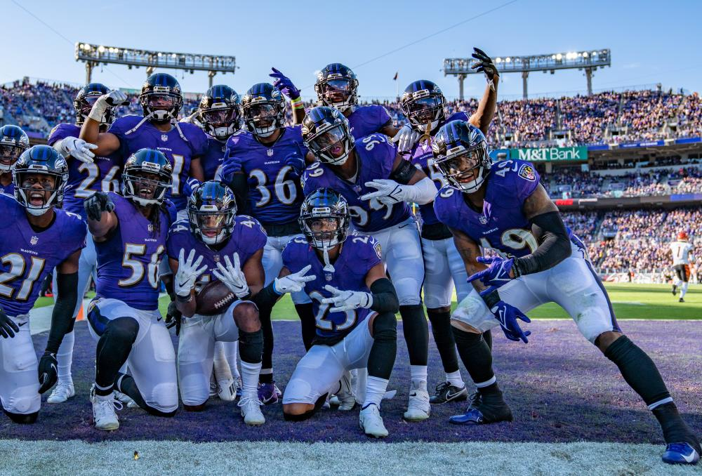

Lab 04 Multi Web Page
2nd Image
This page will have my first image that is related to the Ravens.
Challenge
When I first linked the image and I hit show preview the image was covering the whole page and I wasnt sure if it was something I had to change in my css file but something useful was W3 Schools and noticed I had to do it through the img tag using style and changing the width and length.
About the Image
So, about the image it is a jpg I used it as a jpg because it contains many colors especially in the background, the picture was about the defense so they probably made a good play and celebrated as a team.